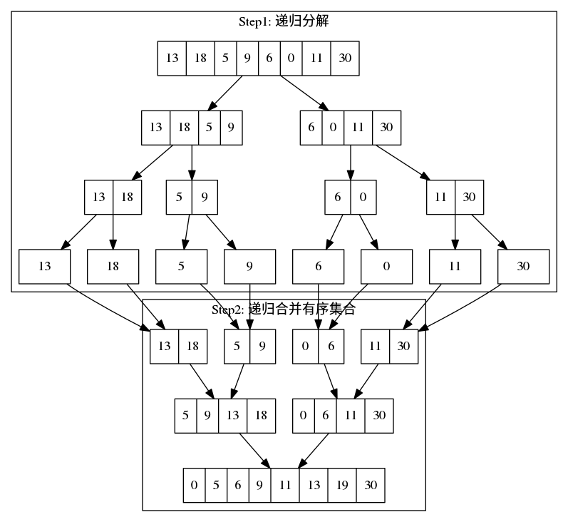

归并排序
归并排序（Merge sort) 是创建在归并操作上的一种有效的排序算法。该算法是采用分治法（Divide and Conquer）的一个非常典型的应用。
归并操作(merge)，也叫归并算法，指的是将两个已经排序的序列合并成一个序列的操作。归并排序算法依赖归并操作。1
分治思想在解决很多问题上的确非常的有效，不仅仅是在写代码上，其实在平时工作生活中也是非常有用的一种处理问题的方法。要加强这方面的锻炼，遇到问题要懂得如何分解，如何解决。
1 算法描述
- 申请空间，使其大小为两个已经排序序列之和，该空间用来存放合并后的序列
- 设定两个指针，最初位置分别为两个已经排序序列的起始位置
- 比较两个指针所指向的元素，选择相对小的元素放入到合并空间，并移动指针到下一位置
- 重复步骤3直到某一指针到达序列尾
- 将另一序列剩下的所有元素直接复制到合并序列尾
2 算法演示图

3 复杂度
比较操作的次数介于(nlogn)/2和n logn - n + 1。 赋值操作的次数是(2nlogn)。 归并算法的空间复杂度为：Θ(n)
4 Java实现
public static int[] mergeSort(int[] arr) { if (arr.length == 1) { return arr; } int half = arr.length / 2; int[] arr1 = new int[half]; int[] arr2 = new int[arr.length - half]; System.arraycopy(arr, 0, arr1, 0, arr1.length); System.arraycopy(arr, half, arr2, 0, arr2.length); arr1 = mergeSort(arr1); arr2 = mergeSort(arr2); return mergeSort(arr1, arr2); } public static int[] mergeSort(int[] arr1, int[] arr2) { int[] result = new int[arr1.length + arr2.length]; int i = 0; int j = 0; int k = 0; while (true) { if (arr1[i] < arr2[j]) { result[k++] = arr1[i]; if (++i > arr1.length - 1) { break; } } else { result[k++] = arr2[j]; if (++j > arr2.length - 1) { break; } } } for (; i < arr1.length; i++) { result[k++] = arr1[i]; } for (; j < arr2.length; j++) { result[k++] = arr2[j]; } return result; }
5 性能测试
本人PC上做的性能测试，仅简单测试了一下合并排序的性能，可能不是非常严谨与客观，结果仅作参考吧。
| 数组长度 | 耗时 .ms |
|---|---|
| 10000 | 14 |
| 100000 | 57 |
| 500000 | 161 |
| 1000000 | 285 |
从上述测试结果上，MergeSort的性能和稳定性还是非常不错的。之后结合上其它排序算法做一个综合比较。